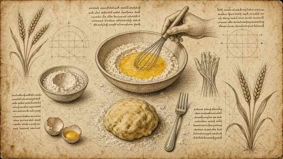
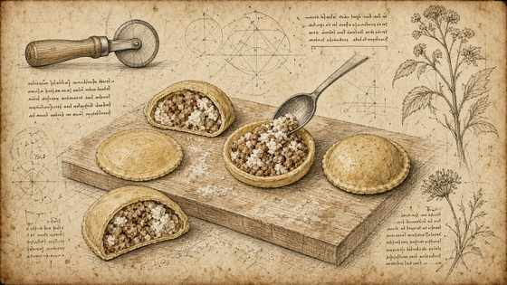
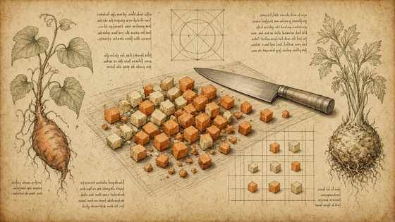
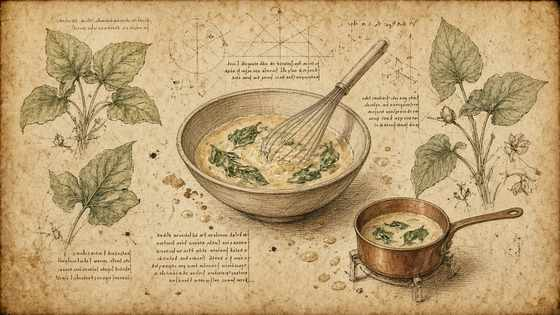
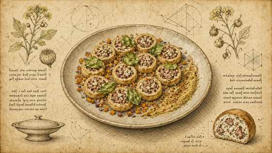

01
Sbattere molto bene le uova senza farina, poi incorporare la farina; tirare la pasta.
Beat the eggs thoroughly without flour, then incorporate flour; roll the pasta.

MasterChef Magazine · Ricetta II · Tutorial
MasterChef Magazine · Recipe II · Tutorial
Ravioli/medaglioni di pasta ripieni di salsiccia, ricotta e rosmarino; salsa al burro e acetosella; mostarda di Cremona. — struttura Fooby, tavole Leonardo; quantità solo se dette nel video.
Pasta medallions filled with sausage, ricotta and rosemary; sorrel butter sauce; Cremona mustard. — Fooby structure, Leonardo plates; quantities only if spoken on camera.
← Scheda del quaderno ← Notebook cardSbattere molto bene le uova senza farina, poi incorporare la farina; tirare la pasta.
Beat the eggs thoroughly without flour, then incorporate flour; roll the pasta.

Formare medaglioni/ravioli ripieni di salsiccia, ricotta e rosmarino.
Form medallions/ravioli filled with sausage, ricotta and rosemary.

Dadolata colorata di patata dolce e sedano rapa («coriandoli di verdure»).
Colourful dice of sweet potato and celeriac («vegetable confetti»).

Salsa: burro montato con aceto (vino bianco/scalogno menzionati) e acetosella; passare al setaccio.
Sauce: whipped butter with vinegar (white wine/shallot mentioned) and sorrel; strain.

Cuocere la pasta, saltare con mostarda di Cremona; impiattare con salsa, coriandoli e mostarda.
Cook the pasta, toss with Cremona mustard; plate with sauce, confetti and mustard.
